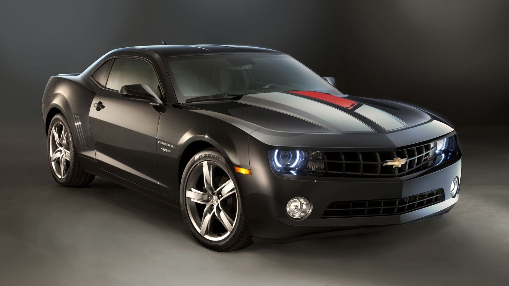
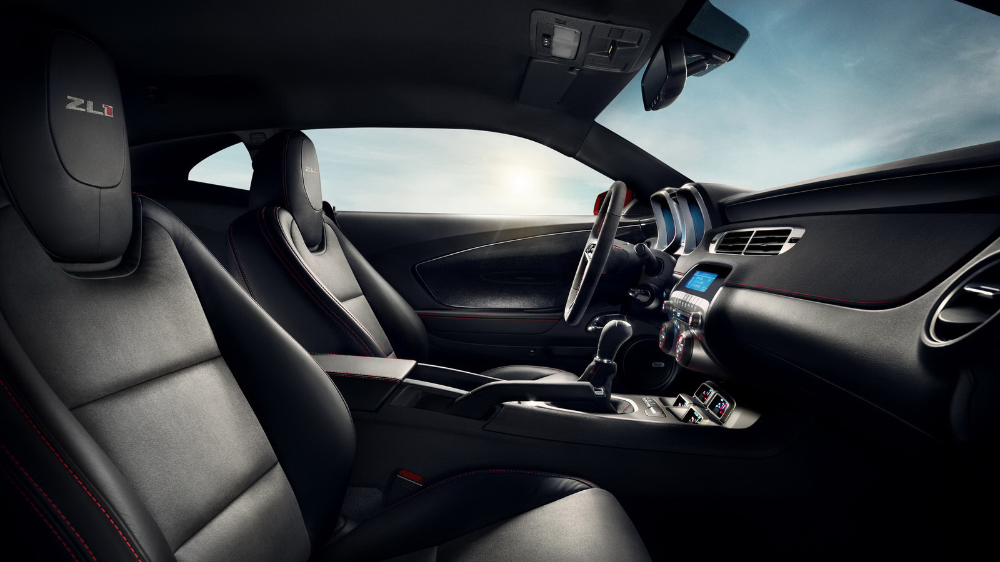
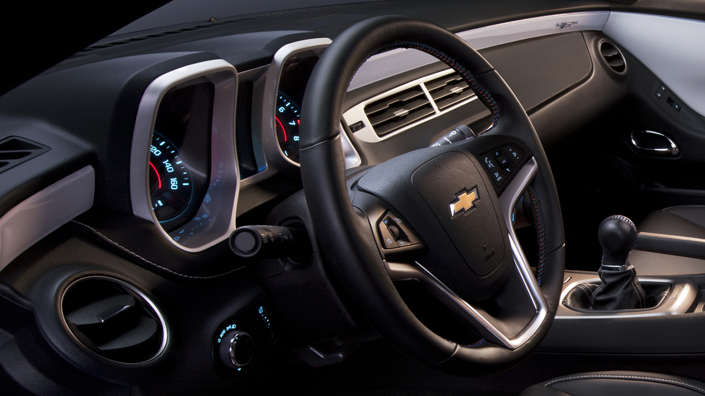

<!doctype html>
<html>
<head>
	<meta charset="utf-8">
	<title>Zoom Images</title>
	<script type="text/javascript" src="js/jquery-3.5.1.min.js"></script>
	<style type="text/css">
		body { background-color: #eeeeff; }
		div#smallImage { width: 350px; height: 197px; position: absolute; top: 20px; left: 20px; border: 1px solid #000000; }
		div#largeImage { width: 350px; height: 302px; position: absolute; top: 20px; left: 420px; border: 1px solid #000000; overflow: hidden; }
		div#thumb1 { width: 170px; height: 96px; position: absolute; top: 225px; left: 20px; border: 1px solid #000000; }
		div#thumb2 { width: 170px; height: 96px; position: absolute; top: 225px; left: 200px; border: 1px solid #000000; }
	</style>
</head>

<body>
	<div id="smallImage"></div>
	<div id="thumb1"></div>
	<div id="thumb2"></div>
	
	<div id="largeImage"></div>
	
	<script type="text/javascript">
		$(document).ready(function(e){
			$("#smallImage").html("");
			$("#thumb1").html("");
			$("#thumb2").html("");
			// if thumb1 is clicked
			$("#thumb1").click(function(){
				var temp = $("#smallImage").html();
				
				$("#smallImage").html( $("#thumb1").html() );
				$("#smallImage").children().width(350);
				$("#smallImage").children().height(197);
				
				// store original smallImage into thumb1 since thumb1 is now in the smallImage box
				$("#thumb1").html( temp );
				$("#thumb1").children().width(170);
				$("#thumb1").children().height(96);
			});
				
			// if thumb2 is clicked
			$("#thumb2").click(function(){
				var temp = $("#smallImage").html();
				
				$("#smallImage").html( $("#thumb2").html() );
				$("#smallImage").children().width(350);
				$("#smallImage").children().height(197);
				
				// store original smallImage into thumb1 since thumb1 is now in the smallImage box
				$("#thumb2").html( temp );
				$("#thumb2").children().width(170);
				$("#thumb2").children().height(96);
			});
			
			//when hovering over smallImage
			$("#smallImage").hover(function(e){
				$("#largeImage").html( $("#smallImage").html() );
				$("#largeImage").children().css("position", "absolute");
				$("#largeImage").children().css("left", "0");
				$("#largeImage").children().css("top", "0");
				
				var imgLocation = $("#largeImage").children().attr("src");
				var slashLocation = imgLocation.lastIndexOf("/");
				var imgName = imgLocation.substring(slashLocation+1);
				
				$("#largeImage").children().width(1600);
				$("#largeImage").children().height(900);
				$("#largeImage").children().attr("src", "zoomImages/"+imgName);
			}, function() { // hide largeImage zoomed in when not hovering over smallImage
				$("#largeImage").html("");
			
			}); // end hover
			
			// smallImage size 350 x 197
			// largeImage size 1600 x 900
			// top left corner of smallImage is 20, 20
			// top left corner of largeImage is 420, 20
			// difference in size is 21.8% (350 / 1600 = 21.8%)
			// if x coordinate of cursor is 120, which is 100 inside the image then 100 x 1600 / 350 = 457.14px
			$("#smallImage").mousemove(function(event){
				// the result of these x, y coordinates need to become the center of largeImage
				// center of largeImage would be (175 x 151) or 420 + 175 and 20 + 151
				xLoc = ((event.pageX - 20) * 1600) / 350;
				yLoc = ((event.pageY - 20) * 900) / 197;
				
				// move largeImage around based on location of cursor hovering over smallImage
				// x axis, first don't let it scroll off the left
				// second, don't let it scroll off the right
				// third, just match up the adjusted x value with the center of largeImage div
				
				if (xLoc < 195)
					$("#largeImage").children().css("left", "0");
				else if (xLoc > 1415)
					$("#largeImage").children().css("left", (-1)*(1250));
				else if (xLoc > 195)
					$("#largeImage").children().css("left", (-1)*(xLoc - 175));
				
				// y axis
				if (yLoc < 195)
					$("#largeImage").children().css("top", "0");
				else if (yLoc > 1415)
					$("#largeImage").children().css("top", (-1)*(598));
				else if (yLoc > 195)
					$("#largeImage").children().css("top", (-1)*(yLoc - 151));
			}); // end mousemove
			
			
			
		}); // end document ready
	</script>
</body>
</html>
